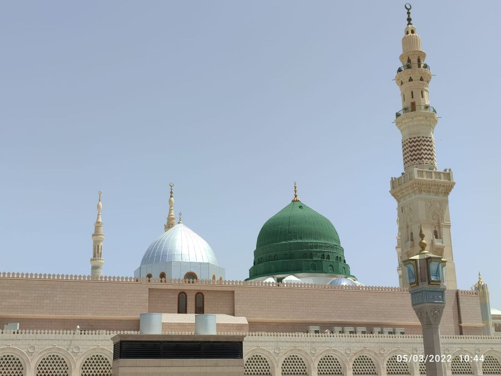

📖 4. Ünite Konu Özeti: Peygamberliğinden Önce Hz. Muhammed


Hz. Muhammed'in (sav) Doğduğu Çevre
1️⃣ Hz. Muhammed'in (sav) Doğduğu Çevre
Hz. Peygamber, Arap Yarımadası'nın Hicaz bölgesinde bulunan Mekke'de doğmuştur. Kur'an'a göre yeryüzündeki ilk mabet olan Kâbe, Mekke'dedir; Hz. Âdem tarafından yapıldığı, Hz. İbrahim ile oğlu Hz. İsmail tarafından yeniden inşa edildiği rivayet edilir.
Putlara tapma, soyla övünme, adaletsizlik gibi olumsuz davranışların yaygın olduğu döneme Cahiliye Dönemi denir. Mekke'de putperestlik (şirk, müşrik) yaygındı; tevhit inancını benimseyenlere hanif denirdi. Halk göçebe (bedevi) ve yerleşik (hadari) olarak ikiye ayrılırdı; kabileler hâlinde yaşarlardı. Yılın belli zamanlarında panayırlar kurulurdu.
🤔 Merak Ettin mi?
Hilfülfudul, Mekke'de haksızlığa uğrayanlara yardım etmek için kurulan bir dayanışma topluluğuydu; Hz. Muhammed gençliğinde bu topluluğa katılmıştı.
⚖️ KarşılaştırmaKarşılaştırma görseli
Doğduğu dönemin iki yüzü
Toplumda olumlu
Toplumda olumsuz
🤔 Sıra SendeDüşün ve cevapla
Bu ortamda “güvenilir” olarak tanınmak neden zordu?
📌 Aklında Kalsın
- Hz. Muhammed, putperestliğin yaygın olduğu bir toplumda doğdu.
- Buna rağmen dürüstlüğüyle tanındı.

Hz. Muhammed'in (sav) Ailesi ve Çocukluğu
2️⃣ Hz. Muhammed'in (sav) Ailesi ve Çocukluğu
Dedesi Abdülmuttalib, Kureyş kabilesinin reisiydi. Babası Abdullah, doğumundan önce Medine'de vefat etti. Annesi Amine'dir. Hz. Muhammed, hicri Rebiyülevvel ayının 12'sinde, miladi 20 Nisan 571'de Mekke'de doğdu.
0-4 yaş: sütannesi Halime'nin yanında (ilk sütannesi Süveybe). 4-6 yaş: annesi Amine'yle (annesi Ebva köyünde vefat etti). 6-8 yaş: dedesi Abdülmuttalib'in yanında. 8-25 yaş: amcası Ebu Talib'in yanında; ticaret ve çobanlık yaptı. İsimleri: Muhammed (övgüye değer), Ahmed, Mustafa (seçilmiş).
Hz. Muhammed, babasını hiç görmeden, altı yaşında annesini ve sekiz yaşında da dedesini kaybederek küçük yaşta yetim ve öksüz kaldı. Ancak her defasında ailesinden biri onu şefkatle sahiplendi. Kur'an'da yer alan Duha suresi, Allah'ın onu bu zor günlerinde hiç yalnız bırakmadığını hatırlatır; bu durum bizlere de yetim ve kimsesiz çocuklara sahip çıkmanın kıymetini öğretir.
🤔 Merak Ettin mi?
Hz. Muhammed 12 yaşındayken amcası Ebu Talib ile birlikte bir ticaret kervanına katılarak Şam'a doğru yola çıktı. Yolculuk sırasında Busra'da bir manastırda yaşayan Rahip Bahira, ondaki bazı özellikleri fark ederek Ebu Talib'i onu iyi korumaları konusunda uyardı. Bu yolculuk, Hz. Muhammed'in daha çocuk denecek yaşta ticaret hayatına ve uzun yolculuklara alıştığını gösterir.
❌ Yanlış Bilinenler
❌ Bazıları Hz. Muhammed'in gençliğinin sıradan, örnek olmayan bir dönem olduğunu düşünür.
✅ Hz. Muhammed'in gençliği; dürüstlük, güvenilirlik ve toplumsal duyarlılıkla (Hilfülfudul gibi) dolu, peygamberliğe zemin hazırlayan bir dönemdi.
🌍 Gerçek Hayattan Bir Örnek
Kâbe'nin tamirinde Hacerülesved'i yerine koyma meselesinde kabilelerin ona güvenip hakem seçmesi, gençliğindeki güvenilirliğinin somut kanıtıdır.
🕰️ Zaman ÇizgisiSıralama
Çocukluk yılları
🏠 Günlük Hayattan
Yetim büyümesine rağmen kırılmadan, insanlara güven veren biri olarak yetişti.
🤔 Sıra SendeDüşün ve cevapla
Zor şartlarda büyümek insana ne kazandırabilir?
📌 Aklında Kalsın
- Küçük yaşta hem annesini hem babasını kaybetti.
- Dedesi ve amcası tarafından yetiştirildi.

Hz. Muhammed'in (sav) Gençlik Yılları
3️⃣ Hz. Muhammed'in (sav) Gençlik Yılları
Dürüstlüğü ve güvenilirliğiyle tanınan Hz. Muhammed'e Mekke halkı "emin" (el-Emin) lakabını verdi. Yemenli bir tüccarın malına haksızlık yapılması üzerine, haksızlığa uğrayanlara yardım için Hilfülfudul (erdemli insanların sözleşmesi) kuruldu; Hz. Muhammed yirmili yaşlarında bu topluluğa katıldı.
Kâbe onarımında Hacerülesved'in (siyah taş) yerine konması konusunda kabileler anlaşamayınca Hz. Muhammed hakem seçildi ve sorunu adaletle çözdü. Zengin tüccar Hatice ile evlendi; altı çocukları oldu (Kasım, Zeyneb, Rukiye, Ümmü Gülsüm, Fatıma, Abdullah) — sadece Hz. Fatıma Peygamber hayattayken vefat etmedi. İlk çocuğu Kasım'ın adından künyesi "Ebülkasım" oldu.
Hatice, Mekke'nin tanınmış ve zengin tüccarlarındandı; kervanını yönetecek dürüst birini arıyordu. Hz. Muhammed'in ticaretteki güvenilir tavrını görünce ona evlenme teklifinde bulundu. Bu durum, dürüst ve güvenilir olmanın hayatta insana ne kadar değerli fırsatlar kazandırabileceğinin güzel bir örneğidir.
💭 Düşün ve Cevapla
Hz. Muhammed'in gençliğinde katıldığı Hilfülfudul gibi bir dayanışma topluluğu bugün nasıl bir örnek oluşturabilir?
👨👩👧 Ailemle Yapıyorum
Ailenle birlikte çevrenizde haksızlığa uğrayan birine nasıl yardımcı olabileceğinizi konuşun ve küçük bir adım atın.
🤔 Merak Ettin mi?
Yaşı ilerledikçe Hz. Muhammed kalabalıklardan uzaklaşıp yalnız başına düşünmeyi (tefekkür) tercih etmeye başladı. Özellikle Ramazan ayında Mekke yakınlarındaki Hira Mağarası'na çekilir, günlerce orada evreni ve yaratılışı düşünürdü. Bu sakin ve derin düşünce dolu yıllar, kırk yaşına geldiğinde kendisine peygamberlik görevinin verilmesine zemin hazırladı.
🔄 Adım AdımSüreç şeması
Gençlik ve ticaret
🏠 Günlük Hayattan
Alışverişte doğru tartmak ve kusuru gizlememek, bugün de aynı dürüstlüktür.
📌 Aklında Kalsın
- Gençliğinde ticaretle uğraştı.
- Dürüstlüğü sebebiyle “el-Emîn” diye anıldı.

Bir Sure Öğreniyorum: Fil Suresi
4️⃣ Bir Sure Öğreniyorum: Fil Suresi
Fil suresi, fillerle donatılmış ordusuyla Kâbe'yi yıkmaya gelen Ebrehe'nin helak edilişini anlatır. Yemen Valisi Ebrehe, Sana şehrinde bir kilise inşa ederek Mekke'nin ticaretine engel olmak istemiş, sonra Kâbe'yi yıkmaya karar vermiştir. Filler Mekke'ye doğru ilerletilmek istendiğinde yerinden kımıldamamış; sürü sürü kuşlar balçıktan pişirilmiş taşlarla orduyu darmadağın etmiştir. Bu olaya "Fil Vakası" denir ve Hz. Muhammed'in doğumundan bir süre önce gerçekleşmiştir.
Fil suresi bize, ne kadar güçlü görünürse görünsün haksızlık yapanların Allah'ın izni olmadan hiçbir zarar veremeyeceğini öğretir. Bu mesaj, günlük hayatımızda karşılaştığımız haksızlıklar karşısında da umutlu ve dürüst kalmamız gerektiğini hatırlatır.
| Okunuşu | Anlamı |
|---|---|
| Elem terâ keyfe feale rabbüke biesḥâbilfîl | Rabbinin, fil sahiplerine ne yaptığını görmedin mi? |
| Elem yec'al keydehüm fîtadlîl | Onların tuzaklarını boşa çıkarmadı mı? |
| Ve ersele aleyhim tayran ebâbîl | Üzerlerine sürü sürü kuşlar gönderdi. |
| Termîhim bihicâratim min siccîl | Balçıktan pişirilmiş taşlar atan, |
| Fecealehüm keasfim me'kûl | Nihayet onları yenilmiş ekin yaprakları hâline getirdi. |
🔍 Derinlemesine Düşünelim
Bu ünitede öğrendiklerini derinlemesine değerlendirmek için kendine şu soruları sor:
- Bu bilgi benim hayatımı nasıl etkiler?
- Bu kavram neden önemlidir?
- Günlük yaşamda bunun karşılığı nedir?
⚖️ Ahlaki İkilem — Sen Olsaydın Ne Yapardın?
Hz. Muhammed, cahiliye döneminde çevresindeki kötü alışkanlıklara hiç katılmadı, hep dürüst kaldı. Herkesin yaptığı ama senin yanlış bulduğun bir şeye katılman istenirse ne yapardın?
✅ Kendimi Değerlendiriyorum
🌍 Hayatta Dene
Bugünün görevi: Hz. Muhammed'in gençliğinde "el-Emin" olarak tanınmasını örnek alarak, bugün verdiğin bir sözü eksiksiz tut.
📌 Aklında Kalsın
- Fil suresi, Kâbe’ye saldıranların engellenmesini anlatır.
- Sure, Allah’ın koruması üzerinde durur.
🖥️ Ünite Sunumu
6. SINIF — 4. ÜNİTE
Peygamberliğinden Önce Hz. Muhammed
Din Kültürü ve Ahlak Bilgisi
Ayşe Yazıcı
🎯 Bu Ünitede Neler Öğreneceğiz?
- Hz. Muhammed'in (sav) Doğduğu Çevre
- Hz. Muhammed'in (sav) Ailesi ve Çocukluğu
- Hz. Muhammed'in (sav) Gençlik Yılları
- Bir Sure Öğreniyorum: Fil Suresi
📌 Hz. Muhammed'in (sav) Doğduğu Çevre (1/3)
- Hz. Peygamber, Arap Yarımadası'nın Hicaz bölgesinde bulunan Mekke'de doğmuştur.
- Kur'an'a göre yeryüzündeki ilk mabet olan Kâbe, Mekke'dedir; Hz. Âdem tarafından yapıldığı, Hz. İbrahim ile oğlu Hz.
- İsmail tarafından yeniden inşa edildiği rivayet edilir.
📌 Hz. Muhammed'in (sav) Doğduğu Çevre (2/3)
- Putlara tapma, soyla övünme, adaletsizlik gibi olumsuz davranışların yaygın olduğu döneme Cahiliye Dönemi denir.
- Mekke'de putperestlik (şirk, müşrik) yaygındı; tevhit inancını benimseyenlere hanif denirdi.
- Halk göçebe (bedevi) ve yerleşik (hadari) olarak ikiye ayrılırdı; kabileler hâlinde yaşarlardı.
🤔 MERAK ETTİN Mİ?
Hilfülfudul, Mekke'de haksızlığa uğrayanlara yardım etmek için kurulan bir dayanışma topluluğuydu; Hz. Muhammed gençliğinde bu topluluğa katılmıştı.
📌 Hz. Muhammed'in (sav) Doğduğu Çevre (3/3)
- Yılın belli zamanlarında panayırlar kurulurdu.
❌ YANLIŞ BİLİNENLER
❌ Bazıları Hz. Muhammed'in gençliğinin sıradan, örnek olmayan bir dönem olduğunu düşünür.
✅ Hz. Muhammed'in gençliği; dürüstlük, güvenilirlik ve toplumsal duyarlılıkla (Hilfülfudul gibi) dolu, peygamberliğe zemin hazırlayan bir dönemdi.
📌 Hz. Muhammed'in (sav) Ailesi ve Çocukluğu (1/2)
- Dedesi Abdülmuttalib, Kureyş kabilesinin reisiydi. Babası Abdullah, doğumundan önce Medine'de vefat etti. Annesi Amine'dir. Hz.
- Muhammed, hicri Rebiyülevvel ayının 12'sinde, miladi 20 Nisan 571'de Mekke'de doğdu.
- 0-4 yaş: sütannesi Halime'nin yanında (ilk sütannesi Süveybe). 4-6 yaş: annesi Amine'yle (annesi Ebva köyünde vefat etti).
📌 Hz. Muhammed'in (sav) Ailesi ve Çocukluğu (2/2)
- 6-8 yaş: dedesi Abdülmuttalib'in yanında. 8-25 yaş: amcası Ebu Talib'in yanında; ticaret ve çobanlık yaptı.
- İsimleri: Muhammed (övgüye değer), Ahmed, Mustafa (seçilmiş).
🌍 GERÇEK HAYATTAN BİR ÖRNEK
Kâbe'nin tamirinde Hacerülesved'i yerine koyma meselesinde kabilelerin ona güvenip hakem seçmesi, gençliğindeki güvenilirliğinin somut kanıtıdır.
📌 Hz. Muhammed'in (sav) Gençlik Yılları (1/3)
- Dürüstlüğü ve güvenilirliğiyle tanınan Hz. Muhammed'e Mekke halkı "emin" (el-Emin) lakabını verdi.
- Yemenli bir tüccarın malına haksızlık yapılması üzerine, haksızlığa uğrayanlara yardım için Hilfülfudul (erdemli insanların sözleşmesi) kuruldu; Hz.
- Muhammed yirmili yaşlarında bu topluluğa katıldı.
💭 DÜŞÜN VE CEVAPLA
Hz. Muhammed'in gençliğinde katıldığı Hilfülfudul gibi bir dayanışma topluluğu bugün nasıl bir örnek oluşturabilir?
📌 Hz. Muhammed'in (sav) Gençlik Yılları (2/3)
- Kâbe onarımında Hacerülesved'in (siyah taş) yerine konması konusunda kabileler anlaşamayınca Hz.
- Muhammed hakem seçildi ve sorunu adaletle çözdü.
- Zengin tüccar Hatice ile evlendi; altı çocukları oldu (Kasım, Zeyneb, Rukiye, Ümmü Gülsüm, Fatıma, Abdullah) — sadece Hz.
📌 Hz. Muhammed'in (sav) Gençlik Yılları (3/3)
- Fatıma Peygamber hayattayken vefat etmedi. İlk çocuğu Kasım'ın adından künyesi "Ebülkasım" oldu.
👨👩👧 AİLEMLE YAPIYORUM
Ailenle birlikte çevrenizde haksızlığa uğrayan birine nasıl yardımcı olabileceğinizi konuşun ve küçük bir adım atın.
📌 Bir Sure Öğreniyorum: Fil Suresi (1/2)
- Fil suresi, fillerle donatılmış ordusuyla Kâbe'yi yıkmaya gelen Ebrehe'nin helak edilişini anlatır.
- Yemen Valisi Ebrehe, Sana şehrinde bir kilise inşa ederek Mekke'nin ticaretine engel olmak istemiş, sonra Kâbe'yi yıkmaya karar vermiştir.
- Filler Mekke'ye doğru ilerletilmek istendiğinde yerinden kımıldamamış; sürü sürü kuşlar balçıktan pişirilmiş taşlarla orduyu darmadağın etmiştir.
✅ KENDİMİ DEĞERLENDİRİYORUM
- ☐ Hz. Muhammed'in doğduğu ortamı (Cahiliye Dönemi) anlatabilirim.
- ☐ Hilfülfudul'ün ne olduğunu açıklayabilirim.
- ☐ Kâbe'nin tarihini biliyorum.
- ☐ Hz. Muhammed'i örnek alarak toplumsal duyarlılık göstermeye çalışıyorum.
📌 Bir Sure Öğreniyorum: Fil Suresi (2/2)
- Bu olaya "Fil Vakası" denir ve Hz. Muhammed'in doğumundan bir süre önce gerçekleşmiştir.
🔑 Önemli Kavramlar (1/2)
🔑 Önemli Kavramlar (2/2)
📖 AYETLERLE DÜŞÜNELİM
"Andolsun, Allah'ın Resulünde sizin için güzel bir örnek vardır."
— Ahzab suresi, 21. ayet
📖 AYETLERLE DÜŞÜNELİM
"Sen elbette yüce bir ahlak üzeresin."
— Kalem suresi, 4. ayet
🎬 KONUYLA İLGİLİ VİDEO
Çöldeki Işık | Hz. Muhammed'in (s.a.v.) Hayatı - 1. Bölüm
🔍 DERİNLEMESİNE DÜŞÜNELİM
- Bu bilgi benim hayatımı nasıl etkiler?
- Bu kavram neden önemlidir?
- Günlük yaşamda bunun karşılığı nedir?
📝 Ünite Özeti
- Hz. Muhammed'in (sav) Doğduğu Çevre
- Hz. Muhammed'in (sav) Ailesi ve Çocukluğu
- Hz. Muhammed'in (sav) Gençlik Yılları
- Bir Sure Öğreniyorum: Fil Suresi
Dinlediğiniz İçin Teşekkürler
Başarılar dilerim.
Ayşe Yazıcı — Din Kültürü ve Ahlak Bilgisi Öğretmeni